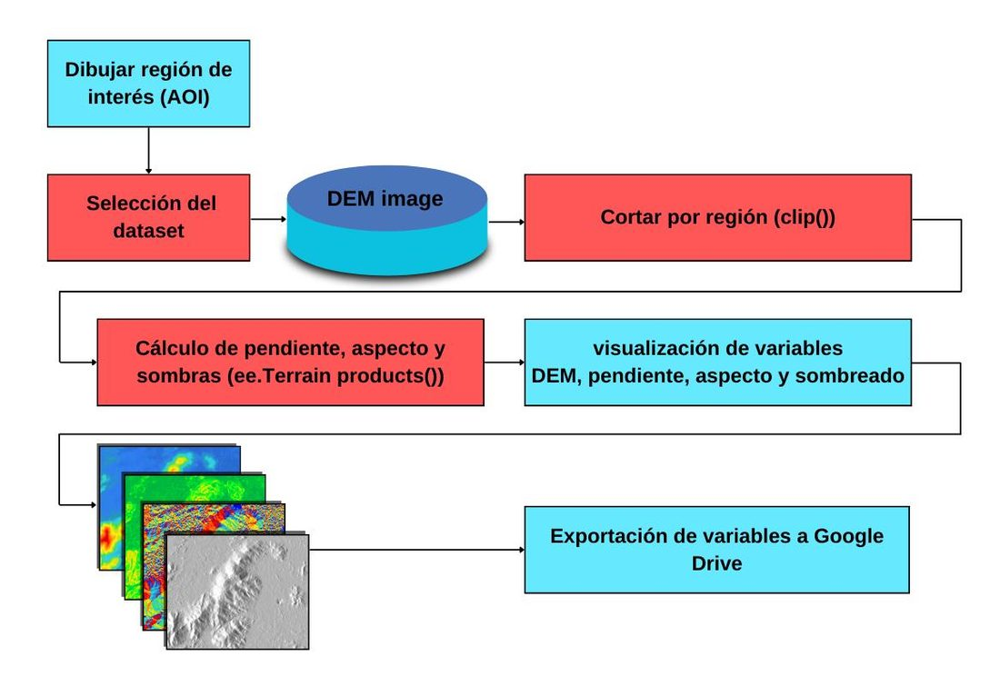
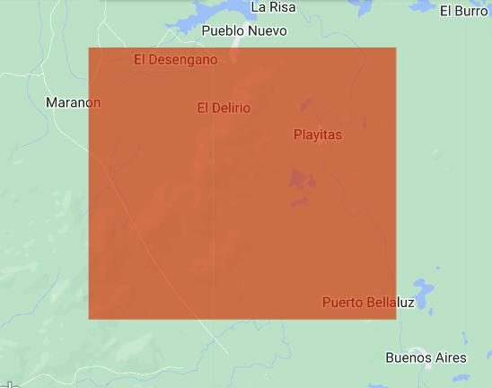
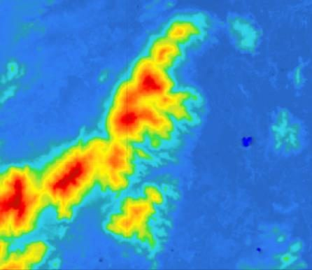
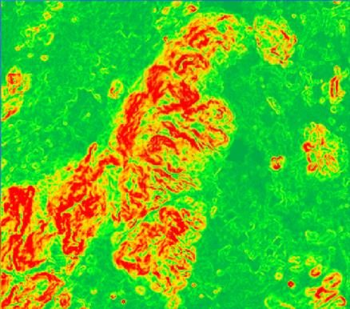
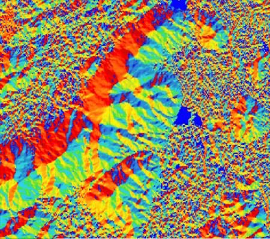
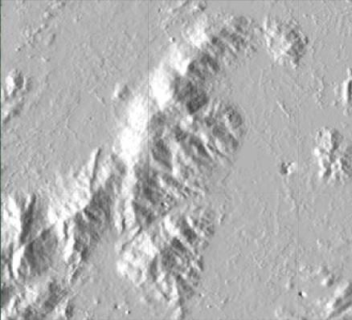

Análisis de terreno en Google Earth Engine
Calcula parámetros morfométricos de un DEM en Google Earth Engine: pendiente, aspecto y sombreado, y descárgalos a Google Drive.
Introducción #
En esta guía aprenderás a cargar un modelo digital de elevación (DEM) en Google Earth Engine y calcular parámetros morfométricos del terreno como la pendiente, el aspecto y el sombreado. Estos productos son útiles en muchas aplicaciones, desde análisis hidrológicos hasta planificación urbana y modelado de la superficie terrestre.
Objetivos #
- Importar un DEM y recortarlo según un área de interés.
- Calcular la pendiente, el aspecto y el sombreado del terreno.
- Visualizar los resultados en un mapa interactivo.
- Exportar los productos generados a Google Drive para su posterior análisis.
Recursos #
Puedes hacer este análisis con cualquiera de los DEM del catálogo de Google Earth Engine, por ejemplo con estos.
Las paletas de colores vienen del script de pendientes de GIS&Beers, un gran recurso para empezar.
Parámetros morfométricos #
Los parámetros morfométricos describen la forma del relieve y se calculan a partir de un DEM. Son clave en geología, hidrología, ordenamiento del territorio, agricultura y gestión del riesgo.
| Parámetro | Qué mide | Ejemplo de uso |
|---|---|---|
| Pendiente | La inclinación del terreno en grados, donde 0° es plano y 90° es vertical. | Zonas susceptibles a deslizamientos o aptas para cultivo. |
| Aspecto | Hacia dónde mira la ladera, con 0° o 360° al norte, 90° al este, 180° al sur y 270° al oeste. | Exposición al sol, humedad del suelo y vegetación. |
| Sombreado | Cómo se ilumina el relieve con una fuente de luz simulada. | Mapas con efecto 3D y lectura visual de la topografía. |
Como referencia, así se suele interpretar la pendiente.
| Pendiente | Relieve |
|---|---|
| 0° a 5° | Plano o casi plano |
| 5° a 15° | Ondulado suave |
| 15° a 30° | Moderadamente escarpado |
| Más de 30° | Fuertemente escarpado |
El sombreado suele ponerse debajo del DEM o de la pendiente con algo de transparencia. Por eso en el código tiene opacity: 0.46.
Proceso #

Paso 1: Dibujar la región de interés #
Dibuja la región de interés (AOI) con las herramientas de geometría del Code Editor.

Antes de ejecutar el código, dibuja tu zona de estudio con las herramientas de geometría del mapa y cámbiale el nombre a AOI en el panel de importaciones, porque así la llama el script.
Paso 2: Seleccionar el DEM #
Usamos el dataset ALOS de JAXA, con una resolución espacial de 30 metros.
var DEM = ee.Image('JAXA/ALOS/AW3D30_V1_1').select(['AVE'], ['elevation']);Paso 3: Recortar con la región de interés #
var dem_clip = DEM.clip(AOI);Paso 4: Calcular pendiente, aspecto y sombreado #
Para estos cálculos usamos ee.Terrain.products(), que recibe un DEM y devuelve una imagen con varias bandas, cada una con una característica del terreno.
- La pendiente (slope) es la inclinación del terreno en cada píxel, en grados.
- El aspecto (aspect) indica hacia dónde se orienta la pendiente, de 0 a 360 grados, como en una brújula.
- El sombreado (hillshade) simula el efecto de la luz solar sobre el terreno y da una sensación tridimensional del relieve.
// Aplicación de la función ee.Terrain.products() al DEM var products = ee.Terrain.products(DEM); // Selección de las bandas resultantes para su visualización var slope = products.select(['slope']); var aspect = products.select(['aspect']); var hill = products.select(['hillshade']);
Paso 5: Visualizar las variables #
// Paleta de visualización para el DEM var vis_dem = {min: 0, max: 5000, palette: [ '0602ff', '235cb1', '307ef3', '269db1', '30c8e2', '32d3ef', '3ae237', 'b5e22e', 'd6e21f', 'fff705', 'ffd611', 'ffb613', 'ff8b13', 'ff6e08', 'ff500d', 'ff0000', 'de0101', 'c21301' ]}; // Paleta de visualización para la pendiente var vis_slope = {min: 0, max: 60, opacity: 1, palette: ['00ad45', '00ff1f', 'ffeb00', 'ffa500', 'ff0000']}; // Paleta de visualización para el aspecto var vis_aspect = {min: 0, max: 360, palette: [ '0602ff', '235cb1', '307ef3', '269db1', '30c8e2', '32d3ef', '3ae237', 'b5e22e', 'd6e21f', 'fff705', 'ffd611', 'ffb613', 'ff8b13', 'ff6e08', 'ff500d', 'ff0000', 'de0101', 'c21301' ]}; // Parámetros de visualización para el sombreado var vis_hill = {min: 0, max: 255, opacity: 0.46}; // Añadir las variables al mapa Map.addLayer(DEM, vis_dem, "elevation", 1); Map.addLayer(slope, vis_slope, "slope", 1); Map.addLayer(aspect, vis_aspect, "aspect", 1); Map.addLayer(hill, vis_hill, "hillshade", 1); Map.centerObject(AOI, 12);




Paso 6: Exportar las variables a Google Drive #
Exporta cada variable a Google Drive en formato GeoTIFF con Export.image.toDrive(). Este ejemplo exporta la pendiente; para las demás cambia image, description y fileNamePrefix.
Export.image.toDrive({
image: slope,
description: 'Terrain variables',
folder: "Digital Elevation Model",
fileNamePrefix: 'DEM',
scale: 30,
region: AOI,
fileFormat: 'GeoTIFF',
formatOptions: {
cloudOptimized: true
}
});Código completo #
Este es el script completo del tutorial. Cópialo, pégalo en el Code Editor y presiona Run. Luego ejecuta la exportación desde la pestaña Tasks.
// AOI: dibuja tu región de interés con las herramientas de geometría del mapa // y nómbrala "AOI" en el panel de importaciones. // Seleccionar el DEM (ALOS, 30 m) var DEM = ee.Image('JAXA/ALOS/AW3D30_V1_1').select(['AVE'], ['elevation']); // Recortar con la región de interés var dem_clip = DEM.clip(AOI); // Aplicación de la función ee.Terrain.products() al DEM var products = ee.Terrain.products(DEM); // Selección de las bandas resultantes para su visualización var slope = products.select(['slope']); var aspect = products.select(['aspect']); var hill = products.select(['hillshade']); // Paleta de visualización para el DEM var vis_dem = {min: 0, max: 5000, palette: [ '0602ff', '235cb1', '307ef3', '269db1', '30c8e2', '32d3ef', '3ae237', 'b5e22e', 'd6e21f', 'fff705', 'ffd611', 'ffb613', 'ff8b13', 'ff6e08', 'ff500d', 'ff0000', 'de0101', 'c21301' ]}; // Paleta de visualización para la pendiente var vis_slope = {min: 0, max: 60, opacity: 1, palette: ['00ad45', '00ff1f', 'ffeb00', 'ffa500', 'ff0000']}; // Paleta de visualización para el aspecto var vis_aspect = {min: 0, max: 360, palette: [ '0602ff', '235cb1', '307ef3', '269db1', '30c8e2', '32d3ef', '3ae237', 'b5e22e', 'd6e21f', 'fff705', 'ffd611', 'ffb613', 'ff8b13', 'ff6e08', 'ff500d', 'ff0000', 'de0101', 'c21301' ]}; // Parámetros de visualización para el sombreado var vis_hill = {min: 0, max: 255, opacity: 0.46}; // Añadir las variables al mapa Map.addLayer(DEM, vis_dem, "elevation", 1); Map.addLayer(slope, vis_slope, "slope", 1); Map.addLayer(aspect, vis_aspect, "aspect", 1); Map.addLayer(hill, vis_hill, "hillshade", 1); Map.centerObject(AOI, 12); // Exportar la pendiente a Google Drive // (para exportar aspect o hillshade, cambia image, description y fileNamePrefix) Export.image.toDrive({ image: slope, description: 'Terrain variables', folder: "Digital Elevation Model", fileNamePrefix: 'DEM', scale: 30, region: AOI, fileFormat: 'GeoTIFF', formatOptions: { cloudOptimized: true } });
Conclusiones #
Con este proceso puedes descargar y visualizar modelos digitales de elevación junto con características del terreno en Google Earth Engine. Estos productos son valiosos para una amplia gama de aplicaciones geoespaciales y aportan información clave para el análisis del paisaje y la topografía.